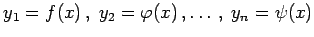

Inhalt Index DeskTop Bronstein

 Differentialrechnung Differentiation von Funktionen von mehreren Veränderlichen Differentiationsregeln für Funktionen von mehreren Veränderlichen Differentiation impliziter Funktionen
Differentialrechnung Differentiation von Funktionen von mehreren Veränderlichen Differentiationsregeln für Funktionen von mehreren Veränderlichen Differentiation impliziter Funktionen


n Funktionen von einer Veränderlichen  seien gegeben durch ein System von n Gleichungen
Differentiation von (6.57a) mit Hilfe von (6.52b) liefert
Auflösen von (6.57b) liefert die gesuchten Ableitungen  .
.
Auf die gleiche Weise werden die Ableitungen höherer Ordnung bestimmt.